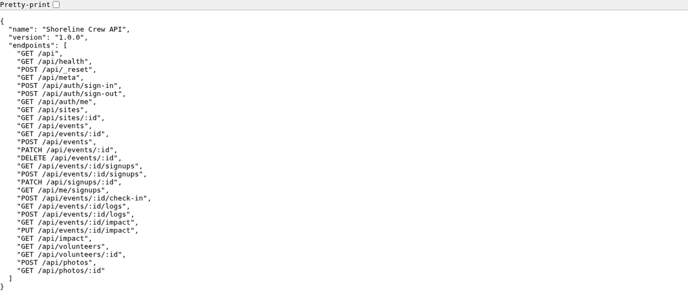
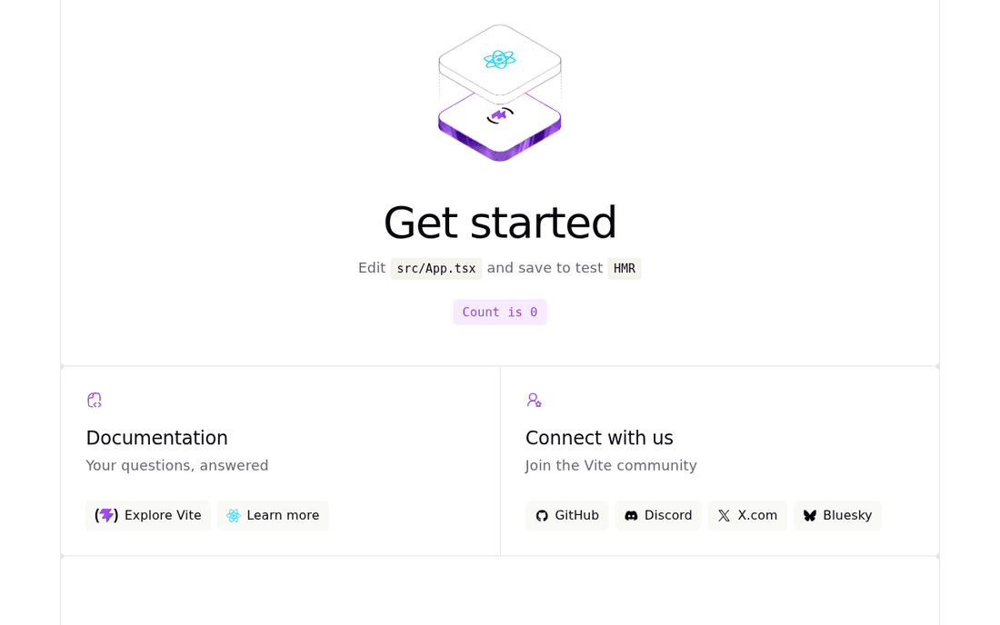
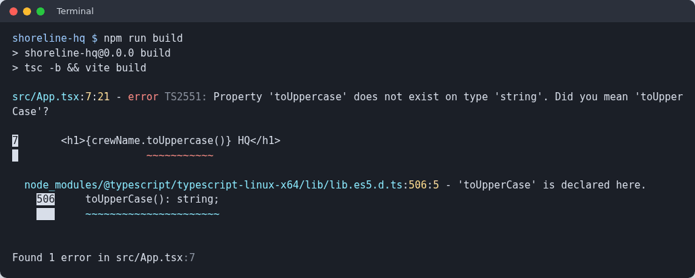

🧰 Lesson 1.2: Your Workspace
A carpenter's first job on a new site is setting up the bench: the right tools, within reach, in good order. Today you set up yours, and you will use it in every lesson from here to the end of the course. By the end of this lesson the Shoreline Crew API will be answering on your own computer, a brand-new React + TypeScript app will be running next to it, and you will have watched three different tools (your editor, the TypeScript compiler and a linter) catch mistakes before any user could see them. Setup lessons have a reputation for being dull. This one is where the course stops being something you read and becomes something you run.
🎯 Learning Objectives
By the end of this lesson, you will be able to:
- Install the current long-term-support version of Node.js and VS Code, and check that they work from a terminal
- Run the Shoreline Crew API locally and read its answers in a browser
- Create a Vite
react-tsproject, install its packages and run its dev server - Explain what each file in a new project does and how
index.html,main.tsxandApp.tsxconnect - Tell running apart from checking: use your editor,
tsc -b,npm run lintandnpm run buildto find mistakes the dev server lets through
📦 Code for this lesson
Starting code: lesson-02-start.zip · Finished code: lesson-02-end.zip. Each folder has a README with the commands to run it. This lesson creates the project from scratch, so the starting folder holds only the API; use the finished code to compare your files or to catch up.
In This Lesson
🧰 Your Workbench at a Glance
Here is everything you set up today and the job each piece does:
| Tool | Its job | Cost |
|---|---|---|
| Node.js (with npm) | runs JavaScript and TypeScript outside the browser: the API, Vite, the TypeScript compiler, the linter and later the tests all run on it. npm installs packages. | free |
| VS Code | your editor: it shows TypeScript's errors as you type and has a terminal built in | free |
| shoreline-api | the course's back end with sample data, answering at http://localhost:4000 | free download |
| Vite | creates the React project, serves it while you work (http://localhost:5173) and builds it for the web | free (installed per project) |
TypeScript (tsc) and oxlint | the checkers: the compiler checks types, the linter flags suspicious code | free (installed per project) |
You only install two things on your computer itself: Node.js and VS Code. Everything else lives inside your course folder, so it cannot clash with other projects, and every learner gets exactly the versions in the project's package.json. That is how professional teams work too: the project, not the laptop, decides the tool versions.
When you work on Shoreline Crew HQ, two programs run side by side, each in its own terminal, and your browser talks to both:
💡 Mental model: the supply shed and the beach
Think of the API as Shoreline Crew's supply shed: it holds the data (cleanups, sites, volunteers) and hands it out when asked. The dev server is the beach where you set up and try things. VS Code is your clipboard with the checklist: it tells you what is missing before you head out. On a cleanup day the shed is unlocked first; in this course, you start the API first.
🟩 Node.js and npm
Node.js is JavaScript outside the browser. You will rarely write Node code in this course, but nearly every tool you use is a Node program. Install the current long-term-support (LTS) version: LTS releases get fixes for years, which is what you want under a course. The course was checked with Node.js 24; any LTS from 24 up works. Older versions do not: the API needs Node to run TypeScript files directly, which older releases cannot do.
Install it
- Windows: open nodejs.org, download the LTS Windows installer (
.msi) and run it, keeping the default options. You do not need the extra "tools for native modules". If you use the Windows package manager,winget install OpenJS.NodeJS.LTSin PowerShell does the same. - macOS: download the LTS macOS installer (
.pkg) from nodejs.org and run it. - Linux: the version in your distribution's package manager is often too old. Use the instructions on the Node.js download page, which offer a version manager (such as nvm) with copy-and-paste commands for the LTS.
A version manager (nvm or fnm on macOS and Linux, nvm-windows or fnm on Windows) lets you keep several Node versions and switch between them. You do not need one for this course, but if you already use one, install the LTS with it (for nvm: nvm install --lts).
Check it
Open a new terminal (on Windows: PowerShell or Terminal from the Start menu; on macOS: Terminal; on Linux: your terminal app). A terminal that was already open before the installation may not find Node yet. Then type:
node -v
npm -vExpected output
v24.22.2
11.19.1Your numbers may be higher. The first must start with v24 or more; npm comes with Node, so if node works, npm does too.
⚠️ Windows: "running scripts is disabled on this system"
On some Windows computers PowerShell refuses to run npm with a message that npm.ps1 cannot be loaded because running scripts is disabled. Either use the Command Prompt instead of PowerShell, or allow scripts you run yourself with Set-ExecutionPolicy -Scope CurrentUser RemoteSigned in PowerShell and open a new terminal. Microsoft's page about execution policies explains what the setting does.
💻 VS Code
Visual Studio Code is a free editor from Microsoft and the one most React and TypeScript developers use. It understands TypeScript out of the box: the red underlines, the pop-ups when you hover, the suggestions when you type a dot all come from the same type checker as tsc. Download it from code.visualstudio.com and install it (Windows, macOS and Linux are all there). If you already use another editor that supports TypeScript, you can keep it; the lessons describe VS Code.
Four things to know before you start:
- Open a folder, not a file. Use File → Open Folder… (on a Mac, File → Open…) and pick your project folder. VS Code then finds the project's
tsconfig.jsonand checks every file the way the build does. - The built-in terminal: View → Terminal, or Ctrl+` (the backtick key; the same on a Mac). It opens in the folder you opened. The + button in the terminal panel adds a second terminal; you will keep two open.
- The Problems panel: View → Problems, or Ctrl+Shift+M (⌘ Cmd+Shift+M on a Mac), lists every error and warning in the files you have open. The counts at the bottom left of the window (a circled ✕ and a ⚠) open it too.
- The Command Palette: Ctrl+Shift+P (⌘ Cmd+Shift+P on a Mac) runs any command by name. Type a few letters of what you want.
Two extensions
Open the Extensions view (Ctrl+Shift+X, or ⌘ Cmd+Shift+X on a Mac), search, and click Install:
- TypeScript 7 support. TypeScript 7 has a new, much faster language service. The TypeScript team publishes it as the extension TypeScript (Native Preview) (identifier
TypeScriptTeam.native-preview) and announced that VS Code itself would include it. If your VS Code already says it uses TypeScript 7, skip this; if not, install the extension. Either way, the error messages in this course look the same in the editor; the extension mainly makes it faster. - Oxc (identifier
oxc.oxc-vscode), optional: shows oxlint's warnings in the editor as you type. Without it you see them when you runnpm run lint, which is enough for the course.
💡 Why so few extensions?
Older tutorials list a page of them: ESLint, Prettier, snippet packs, "Error Lens". The Vite template you create today uses oxlint instead of ESLint, and snippet packs type code for you that you should be learning to type yourself. Start with these two; add others when you know which problem they solve.
🌊 The Shoreline Crew API on Your Computer
Every file of the course lives in one folder, shoreline. Make it somewhere easy to find, such as your Documents folder or your home folder (avoid folders that sync to the cloud while you work, and paths with unusual characters). It will end up holding three things:
shoreline/shoreline-api/: the API (downloaded today, never edited)shoreline-hq/: your React + TypeScript app (created today)ts-lab/: your TypeScript workbench (Lesson 2.1)
- Download shoreline-api.zip and unzip it into
shoreline. On Windows, right-click the file and choose Extract All…; on a Mac, double-click it; on Linux, use your file manager or theunzipcommand. - Check the result:
shoreline/shoreline-api/server.tsmust exist. Some unzip tools add an extra folder level (shoreline-api/shoreline-api/); if yours did, move the inner folder up one level. - Open the
shorelinefolder in VS Code (File → Open Folder…; on a Mac, File → Open…). If VS Code asks whether you trust the authors of the files, choose Yes: it is the course's code. - Open the terminal (Ctrl+`), go into the API's folder and start it:
cd shoreline-api
node server.tsExpected output
Shoreline Crew API running at http://localhost:4000/api
sample sign-in: maya.okafor@example.com (organizer) or theo.nakamura@example.com (volunteer), password shoreline-demo
Press Ctrl+C to stop.There is no npm install: the API has no dependencies, and Node 24 runs its TypeScript directly (by removing the types, as you saw in Lesson 1.1). The terminal now belongs to the server; it stays busy until you stop it with Ctrl+C (also Ctrl+C on a Mac). Leave it running.
Open http://localhost:4000/api in your browser. localhost means "this computer" and 4000 is the port, the number that tells your computer which running program a request is for.

http://localhost:4000/api answers with the list of everything it can do. Your browser may show the same JSON with colors or as a tree.Now try http://localhost:4000/api/events: the first page of cleanups, as an array of objects like the one in Lesson 1.1. Look back at the terminal: the API logs every request it answers, with the status code and how long it took (for example GET /api/events 200 1 ms). That log is a useful window when your app's data does not look right. The Shoreline API Reference lists every endpoint; you do not need to learn it now.
💡 The data resets
The API keeps its data in memory. When you stop and restart it, the sample data comes back fresh, with cleanups placed around today's date. Later, when your app creates and changes cleanups, that is a feature: you can always start over.
⚡ A New Vite react-ts Project
Vite (French for "quick", said "veet") is one of the build tools the React documentation suggests when you build an app without a framework. It creates the project from a template, runs a development server that shows your changes the moment you save, and builds the finished files for hosting. The template you use, react-ts, is React with TypeScript already set up.
Open a second terminal (the + button in the terminal panel). It starts in shoreline; make sure it does not say shoreline-api (if it does, type cd ..). Then run:
npm create vite@latest shoreline-hq -- --template react-tsThe command downloads the project creator, create-vite, and runs it. It asks three questions; here is what each one means and what to answer:
- Ok to proceed? (y): npm asks before it downloads a package to run. Press Enter (the
yin brackets is the default). You only see this the first time. - Which linter to use?: keep Oxlint (already selected) and press Enter. The course uses it.
- Install with npm and start now?: press → to select No, then Enter. "Yes" would run the next two commands for you; doing them yourself shows you what they do.
Expected output
Need to install the following packages:
create-vite@9.3.4
Ok to proceed? (y)
> npx
> 'cva' shoreline-hq --template react-ts
create-vite v9.3.4
│
◇ Which linter to use?
│ Oxlint
│
◇ Install with npm and start now?
│ No
│
◇ Scaffolding project in /Users/you/shoreline/shoreline-hq...
│
└ Done. Now run:
cd shoreline-hq
npm install
npm run devThe > npx lines are npm showing what it runs (cva is a short name for create-vite), and your path in the "Scaffolding project" line will be your own folder. npm may also print a few npm notice lines saying a newer major version of npm is available: you can ignore them, since the npm that comes with your Node.js is the one the course was checked with. Now follow the three lines create-vite printed:
cd shoreline-hq
npm install
npm run devExpected output (npm install)
added 28 packages, and audited 29 packages in 7s
9 packages are looking for funding
run `npm fund` for details
found 0 vulnerabilitiesExpected output (npm run dev)
VITE v8.3.8 ready in 161 ms
➜ Local: http://localhost:5173/
➜ Network: use --host to expose
➜ press h + enter to show helpnpm install reads the project's package.json, downloads React, Vite, TypeScript and the rest into a node_modules folder and writes the exact versions it chose to package-lock.json. Times and counts may differ slightly on your computer. npm run dev starts the dev server, which keeps this second terminal busy the way the API keeps the first one (when you stop it with Ctrl+C, Windows may ask Terminate batch job (Y/N)?: type Y and press Enter). Open http://localhost:5173/ (in most terminals you can also Ctrl+click the link, ⌘ Cmd+click on a Mac):

npm run dev: the template's starter page. Click Count is 0 and the number goes up; that button is a small React component with state.The page says to edit src/App.tsx and save to test HMR, hot module replacement: when you save a file, Vite swaps just that piece of the running page without a full reload, and React keeps what it can (click the counter a few times, change the words Get started in App.tsx, save with Ctrl+S or ⌘ Cmd+S, and watch the heading change while the count stays). That instant loop between your editor and the browser is how you will work for the rest of the course.
🧩 Version note: the linter question
Vite 8's project creator asks which linter you want and preselects Oxlint, a fast linter written in Rust that understands TypeScript and React. Older tutorials (and older versions of the template) show ESLint with an eslint.config.js file; if you meet that on a team, it does the same job with a different configuration file.
🗺️ A Tour of the Project
Open the shoreline-hq folder in the VS Code Explorer (the file list on the left). Here is what create-vite wrote and what each file is for:
| File or folder | What it is |
|---|---|
index.html | the one HTML page of the app; React draws everything inside its <div id="root"> |
src/main.tsx | the entry point: starts React and puts the App component on the page |
src/App.tsx, src/App.css | the starter page and its styles (you replace them in the project) |
src/index.css | styles for the whole page |
src/assets/, public/ | pictures: files in src/assets are imported by code and processed by Vite; files in public are copied as they are (favicon.svg is the browser tab's icon) |
package.json, package-lock.json | the project's name, its scripts and its dependencies; the lock file records the exact versions installed |
node_modules/ | the installed packages; never edit it, never share it (npm install recreates it) |
tsconfig.json, tsconfig.app.json, tsconfig.node.json | TypeScript's settings: one for your app code, one for the config files that run in Node |
vite.config.ts | Vite's settings (for now: "use the React plugin") |
.oxlintrc.json | the linter's settings |
.gitignore, README.md | files Git should not track (such as node_modules and dist), and the template's notes |
How the page starts
The browser loads index.html, which loads src/main.tsx, which hands the page to React:
import { StrictMode } from 'react'
import { createRoot } from 'react-dom/client'
import './index.css'
import App from './App.tsx'
createRoot(document.getElementById('root')!).render(
<StrictMode>
<App />
</StrictMode>,
)Read it from the bottom up. createRoot(…) takes an element of the page and makes React responsible for everything inside it; .render(…) tells React what to draw there: the App component, wrapped in StrictMode (a development helper that warns about common mistakes; it adds nothing to the finished app). The import of App ends in .tsx: in this project, imports name the real file.
There is TypeScript here too. Hover over getElementById in VS Code and the pop-up says it returns HTMLElement | null: "an element, or null if no element has that id". createRoot needs an element, not "maybe nothing", so TypeScript would complain. The ! after the call is the non-null assertion: the template's promise that the element exists (it does: it is in index.html). It is one of the few places where that promise is safe; Lesson 2.2 shows how to handle "maybe null" properly.
The scripts
{
"name": "shoreline-hq",
"private": true,
"version": "0.0.0",
"type": "module",
"scripts": {
"dev": "vite",
"build": "tsc -b && vite build",
"lint": "oxlint",
"preview": "vite preview"
},
...| Command | What it does | Checks types? |
|---|---|---|
npm run dev | the development server with instant updates (:5173) | no |
npm run build | tsc -b checks every file, and only if that passes, vite build writes the finished site to dist/ | yes |
npm run lint | oxlint looks for suspicious code | no (it looks for patterns, not types) |
npm run preview | serves what build wrote, the way a host would (:4173) | no |
The && in "tsc -b && vite build" means "run the second command only if the first one succeeded". That one symbol is why a type error stops the build. -b is build mode: tsc follows the references in tsconfig.json to the two real configurations.
The TypeScript settings, briefly
You will read tsconfig.app.json line by line in Lesson 2.4. For now, four settings are worth knowing about:
{
"compilerOptions": {
"tsBuildInfoFile": "./node_modules/.tmp/tsconfig.app.tsbuildinfo",
"target": "es2023",
"lib": ["ES2023", "DOM"],
"module": "esnext",
"types": ["vite/client"],
"allowArbitraryExtensions": true,
"skipLibCheck": true,
/* Bundler mode */
"moduleResolution": "bundler",
"allowImportingTsExtensions": true,
"verbatimModuleSyntax": true,
"moduleDetection": "force",
"noEmit": true,
"jsx": "react-jsx",
/* Linting */
"noUnusedLocals": true,
"noUnusedParameters": true,
"erasableSyntaxOnly": true,
"noFallthroughCasesInSwitch": true
},
"include": ["src"]
..."include": ["src"](at the end of the file): the app's checks cover everything insrc."noEmit": true:tsconly checks; Vite produces the JavaScript."jsx": "react-jsx": TSX is allowed and turned into React calls.noUnusedLocalsandnoUnusedParameters: an unused variable is an error in this project, not a hint. You will meet that in the exercises.
Notice what is not there: "strict": true. In TypeScript 7, strict checking is on by default, so the template does not need to say it. Old tutorials that tell you to "turn on strict mode" are describing what you already have.
🔍 Running Is Not Checking
In Lesson 1.1, Node ran a file with a typo and printed NaN while the compiler caught the mistake. The dev server works the same way: to stay instant, Vite removes the types from each file you save and sends the result to the browser without checking it. Three other places do check:
- Your editor, as you type: a red wavy underline, a message when you hover over it, and an entry in the Problems panel.
npx tsc -b, the whole project at once. It prints nothing at all when everything is fine.npm run build, which runstsc -bfirst and refuses to build if it fails.
Here is what each one shows for a single typo in App.tsx, a call to toUppercase() (lowercase c) where JavaScript's method is toUpperCase():
<h1>{crewName.toUppercase()} HQ</h1>In VS Code, toUppercase gets a red wavy underline the moment you type it. Hover over it and the pop-up says Property 'toUppercase' does not exist on type 'string'. Did you mean 'toUpperCase'? The same message appears in the Problems panel with the file name, line and column, and the error count at the bottom left of the window turns to 1. Click the underlined word and press Ctrl+. (⌘ Cmd+. on a Mac) to see the editor's suggested fixes, such as changing the spelling.
In the terminal, the build stops at its first step:

npm run build stops at the first step: tsc -b finds the typo, so vite build never runs and nothing broken gets built.Expected output (npm run build)
> shoreline-hq@0.0.0 build
> tsc -b && vite build
src/App.tsx:7:21 - error TS2551: Property 'toUppercase' does not exist on type 'string'. Did you mean 'toUpperCase'?
7 <h1>{crewName.toUppercase()} HQ</h1>
~~~~~~~~~~~
node_modules/@typescript/typescript-linux-x64/lib/lib.es5.d.ts:506:5 - 'toUpperCase' is declared here.
506 toUpperCase(): string;
~~~~~~~~~~~~~~~~~~~~~~
Found 1 error in src/App.tsx:7Read it the way you learned in Lesson 1.1: file, line and column (src/App.tsx:7:21), the code (TS2551), the message with its suggestion, the line with the problem underlined, then the follow-up that says where TypeScript's knowledge came from. Here that is TypeScript's own description of JavaScript's built-in strings, a file inside node_modules (its folder name depends on your system, for example typescript-win32-x64 on Windows). You never edit that file; it is simply where toUpperCase is declared.
On the dev server, Vite serves the same file without complaint and the browser runs it. The call fails while the page is being drawn, React has nothing to show, and the page goes blank. The only clue is in the browser's developer tools (F12, or ⌘ Cmd+Option+I on a Mac, then the Console tab), which shows crewName.toUppercase is not a function and React's note that "An error occurred in the <App> component". Same mistake, three very different experiences: the editor told you while you typed, the build refused to ship it, and the dev server let a user find it.
💡 Mental model: the practice run and the inspection
The dev server is a practice run on the beach: quick, forgiving, made for trying things. The build is the inspection before the crew heads out: slower, strict, and it stops anything that is not right. Keep your editor's Problems panel in view while you practice, and let npm run build have the final word.
✅ Errors are your first teammate
Notice how much the message did for you: it found the line, explained the problem and suggested the fix. Treat every red underline as a colleague tapping your shoulder, not as a grade. Developers who read messages calmly from top to bottom fix things faster than developers who know more but panic.
The linter
A linter reads your code for patterns that are probably mistakes or bad habits: an unused variable, a React hook called in the wrong place, a comparison that can never be true. TypeScript asks "do the types fit?"; oxlint asks "does this look like a bug?". The two overlap a little and complement each other a lot (the template's .oxlintrc.json turns on its React, TypeScript and general rules). Run it now on the starter project:
npm run lintExpected output
> shoreline-hq@0.0.0 lint
> oxlint
Found 0 warnings and 0 errors.
Finished in 7ms on 3 files with 116 rules using 20 threads.The time and thread count will differ. "0 warnings and 0 errors" is the target for every lesson in this course.
⚠️ Common Mistakes
⚠️ Running a command in the wrong folder
npm looks for package.json in the folder you are in. Run npm run dev in shoreline instead of shoreline-hq and you get:
Expected output
npm error code ENOENT
npm error syscall open
npm error path /Users/you/shoreline/package.json
npm error errno -2
npm error enoent Could not read package.json: Error: ENOENT: no such file or directory, open '/Users/you/shoreline/package.json'
npm error enoent This is related to npm not being able to find a file.
npm error enoent
npm error A complete log of this run can be found in: /Users/you/.npm/_logs/2026-...-debug-0.logRead the path line: it shows where npm looked. cd shoreline-hq and try again. Most terminals show the current folder in the prompt; glance at it before every command.
⚠️ Starting the API twice
Only one program can listen on a port. Run node server.ts in a second terminal while the first copy is still running and you get:
Expected output
shoreline-api: port 4000 is already in use. Is the API already running in another terminal? Or start it with --port=4100Use the copy that is already running (look through your terminals), or stop it with Ctrl+C first. The Vite dev server behaves more quietly: if port 5173 is taken, it picks the next free port, so check the Local: line for the address it actually used.
⚠️ An old Node.js
If node -v shows v20, v18 or older (it can happen when an old version was installed earlier, or a version manager is set to one), the API cannot start:
Expected output (with Node.js 20)
node:internal/modules/esm/get_format:189
throw new ERR_UNKNOWN_FILE_EXTENSION(ext, filepath);
^
TypeError [ERR_UNKNOWN_FILE_EXTENSION]: Unknown file extension ".ts" for /Users/you/shoreline/shoreline-api/server.ts
at Object.getFileProtocolModuleFormat [as file:] (node:internal/modules/esm/get_format:189:9)
at defaultGetFormat (node:internal/modules/esm/get_format:232:36)
at defaultLoad (node:internal/modules/esm/load:145:22)
at async ModuleLoader.loadAndTranslate (node:internal/modules/esm/loader:543:45)
at async ModuleJob._link (node:internal/modules/esm/module_job:148:19) {
code: 'ERR_UNKNOWN_FILE_EXTENSION'
}
Node.js v20.20.2"Unknown file extension .ts" means this Node cannot run TypeScript files. Install the current LTS, open a new terminal and check node -v again. The troubleshooting page has more on this one.
⚠️ Trusting a page that loads
"It shows up in the browser" only means Vite could serve it. Check the Problems panel, and run npm run build before you call a step finished. Every lesson's checklist from here on includes a clean build.
⚠️ Closing the terminal that runs a server
Closing a terminal (or VS Code) stops the program in it. If the app suddenly cannot reach the API, or localhost:5173 does not answer, check that both terminals are still running their servers.
🛠️ Project: Make It Shoreline Crew HQ
The template is someone else's page. In this project you clear it out, put Shoreline Crew HQ's first words on the screen, break the app on purpose to see each checker at work, and finish with a clean lint and a clean build. If you have not yet done the steps in the sections above (Node.js, VS Code, the API, npm create vite), do them first.
Step 1: Two terminals, two servers (5 min)
- In VS Code with the
shorelinefolder open, make sure terminal 1 is running the API (node server.tsinshoreline-api) and terminal 2 the dev server (npm run devinshoreline-hq). The terminal panel has a list or tabs for switching between them; you can rename each one (right-click it, Rename…) to "api" and "hq". - Check both addresses in your browser:
http://localhost:4000/apiandhttp://localhost:5173/.
Step 2: Clear out the template (15 min)
- In the Explorer, delete
src/App.css, the wholesrc/assetsfolder andpublic/icons.svg(right-click → Delete). Keeppublic/favicon.svgfor now; the crew's own icon arrives in Lesson 3.1. The browser page shows an error while files are missing: that is expected, and the next step fixes it. - Replace everything in
src/App.tsxwith this (type it):
const crewName: string = 'Shoreline Crew'
const tagline: string = 'Many hands, cleaner sands.'
function App() {
return (
<main>
<h1>{crewName} HQ</h1>
<p>{tagline}</p>
</main>
)
}
export default AppApp is a component: a function that returns what the screen should show. The HTML-like part is TSX; {crewName} puts a JavaScript value into it. : string on the two constants is a type annotation, as in Lesson 1.1. TypeScript could work these out on its own (Lesson 2.1 shows when to write annotations and when to leave them out); here they give you something to break in Step 3. The page uses a <main> landmark and one <h1>, so screen reader users can jump straight to the content and know what page they are on.
- Replace everything in
src/index.csswith a few plain base styles (Lesson 3.1 replaces them with the crew's colors):
:root {
font-family: system-ui, 'Segoe UI', Roboto, sans-serif;
line-height: 1.5;
color-scheme: light dark;
}
body {
margin: 0;
padding: 2rem 1rem;
}color-scheme: light dark lets the browser use dark colors when your system is in dark mode, so the page is readable either way.
- In
index.html, change the<title>toShoreline Crew HQ; it is the text on the browser tab and the first thing a screen reader announces:
<!doctype html>
<html lang="en">
<head>
<meta charset="UTF-8" />
<link rel="icon" type="image/svg+xml" href="/favicon.svg" />
<meta name="viewport" content="width=device-width, initial-scale=1.0" />
<title>Shoreline Crew HQ</title>
</head>
<body>
<div id="root"></div>
<script type="module" src="/src/main.tsx"></script>
</body>
</html>- Save every file. The browser updates by itself:

Step 3: Break it on purpose (15 min)
- In
App.tsx, change{crewName}in the heading to{crewName.toUppercase()}and save. Before looking anywhere else, look at the editor: find the red underline, hover over it and read the message. Open the Problems panel and find the same error there. - Look at the browser on
localhost:5173: the page is blank. Open the developer tools (F12, or ⌘ Cmd+Option+I on a Mac) and find the error in the Console tab. - In terminal 2, stop the dev server (Ctrl+C) and run
npx tsc -b. Compare its message with your editor's: same code, same words, plus the code frame. - Fix the typo the editor's way: click the underlined word, press Ctrl+. (⌘ Cmd+. on a Mac) and pick the spelling fix if it is offered, or type it yourself. Save, run
npx tsc -bagain and enjoy the silence: no output means no errors. - Now put the heading back to plain
{crewName}, as in Step 2 (the uppercase version was only there to break).
Expected output (npx tsc -b with the typo)
src/App.tsx:7:21 - error TS2551: Property 'toUppercase' does not exist on type 'string'. Did you mean 'toUpperCase'?
7 <h1>{crewName.toUppercase()} HQ</h1>
~~~~~~~~~~~
node_modules/@typescript/typescript-linux-x64/lib/lib.es5.d.ts:506:5 - 'toUpperCase' is declared here.
506 toUpperCase(): string;
~~~~~~~~~~~~~~~~~~~~~~
Found 1 error in src/App.tsx:7Step 4: Lint, build and preview (10 min)
In terminal 2, run the three commands you will run at the end of every lesson:
npm run lint
npm run build
npm run previewExpected output (npm run build)
> shoreline-hq@0.0.0 build
> tsc -b && vite build
vite v8.3.8 building client environment for production...
✓ 16 modules transformed.
computing gzip size...
dist/index.html 0.46 kB │ gzip: 0.30 kB
dist/assets/index-DzE5JpJi.css 0.27 kB │ gzip: 0.18 kB
dist/assets/index-B1j6Mmhu.js 219.66 kB │ gzip: 68.65 kB
✓ built in 110msExpected output (npm run preview)
> shoreline-hq@0.0.0 preview
> vite preview
➜ Local: http://localhost:4173/
➜ Network: use --host to expose
➜ press h + enter to show helpThe file names in dist/assets/ end in a hash (such as -B1j6Mmhu; yours will differ) that changes whenever the file's content changes, so browsers never use an old copy. Most of the 220 kB is React itself. Open http://localhost:4173/: this is the built app, served the way a web host would serve it. It looks the same as the dev version, which is the point. Stop the preview with Ctrl+C and start npm run dev again to keep working.
Step 5: Write your start-of-session card (5 min)
Every later lesson begins with both servers running. In your journal or in a note, write the routine in your own words so you never have to look it up: open the shoreline folder in VS Code; terminal 1: cd shoreline-api, node server.ts; terminal 2: cd shoreline-hq, npm run dev; at the end: Ctrl+C in both.
Your own project: the final project (Lesson 11.1) starts with this same npm create vite@latest command. Write down the folder name you would give your own app, and one screen it would have.
✅ Project Completion Checklist
- ☐
node -vshows v24 or newer, and VS Code opens myshorelinefolder - ☐ The API answers at
http://localhost:4000/apiand logs each request in its terminal - ☐
shoreline-hqshows "Shoreline Crew HQ" and the tagline athttp://localhost:5173/, with the tab titled Shoreline Crew HQ - ☐ I saw one typo in three places: the editor,
npx tsc -band the blank page on the dev server - ☐
npm run lintreports 0 warnings and 0 errors, andnpm run buildfinishes with "built in" - ☐ I wrote my start-of-session routine down
🏋️ Hands-on Exercises
Exercises 1 and 2 are part of the lesson (about 15 minutes together, included in the lesson time). Undo each change afterwards so npm run build is clean again.
🏋️ Exercise 1: The wrong kind of value
In App.tsx, change the annotation on tagline from string to number and save. Predict before you look: what does the editor say, what does npx tsc -b say, and does the page on localhost:5173 still show the tagline?
💡 Hint
Think about what the dev server does with types, and what the browser receives after they are removed.
✅ Solution
const tagline: number = 'Many hands, cleaner sands.'Expected output (npx tsc -b)
src/App.tsx:2:7 - error TS2322: Type 'string' is not assignable to type 'number'.
2 const tagline: number = 'Many hands, cleaner sands.'
~~~~~~~
Found 1 error in src/App.tsx:2The editor underlines tagline with the same message. The page still shows the tagline perfectly, because once the types are removed the code is ordinary, working JavaScript. Type errors do not always break the page; sometimes they warn you about code that only happens to work today. Either way, the build refuses it.
🏋️ Exercise 2: One mistake, two tools
Add the line const crewSize = 24 under tagline in App.tsx, and do not use it anywhere. Run npx tsc -b, then npm run lint. Do both complain? Which one makes npm run build fail, and why?
💡 Hint
Look back at the four settings from tsconfig.app.json in the tour.
✅ Solution
Expected output (npx tsc -b)
src/App.tsx:3:7 - error TS6133: 'crewSize' is declared but its value is never read.
3 const crewSize = 24
~~~~~~~~
Found 1 error in src/App.tsx:3Expected output (npm run lint)
> shoreline-hq@0.0.0 lint
> oxlint
⚠ eslint(no-unused-vars): Variable 'crewSize' is declared but never used. Unused variables should start with a '_'.
╭─[src/App.tsx:3:7]
2 │ const tagline: string = 'Many hands, cleaner sands.'
3 │ const crewSize = 24
· ────┬───
· ╰── 'crewSize' is declared here
4 │
╰────
help: Consider removing this declaration.
Found 1 warning and 0 errors.
Finished in 7ms on 3 files with 116 rules using 20 threads.Both notice it. TypeScript reports an error (TS6133) because the template sets noUnusedLocals, so the build fails. oxlint reports a warning with a code frame and a suggestion; warnings do not make npm run lint fail, which is why the course aims for 0 of them anyway. Notice the two messages say the same thing in different words: it helps to recognize both.
🏋️ Exercise 3: Ask the API questions (Stretch)
Optional stretch, not counted in the lesson time (about 10 minutes).
With the API running, open these addresses in your browser and answer the questions: http://localhost:4000/api/meta (what is the crew's tagline?), http://localhost:4000/api/sites (how many sites are there, and which one is a jetty?), http://localhost:4000/api/events?status=completed (how many cleanups are completed?), and finally http://localhost:4000/api/events?status=finished. What does the API answer to that last one, and why?
💡 Hint
A cleanup's status is always one of four words. You met them in Lesson 1.1's last exercise.
✅ Solution
The tagline is "Many hands, cleaner sands." (the one in your App.tsx). There are six sites; North Jetty is the jetty. Six cleanups are completed. For status=finished the API answers with an error instead of a list: "error": "validation_failed" and, under fieldErrors, "status must be one of: draft, scheduled, completed, cancelled.". Real APIs check what they are sent, and this one tells you which field was wrong and why. You will show messages like that to users in Lesson 3.5, and in Lesson 2.4 you will describe those four words as a TypeScript type.
🎯 Quick Quiz
🎯 Check Your Understanding
Question 1: npm run dev is running, and you save App.tsx with crewName.toUppercase() in it. What happens on localhost:5173?
Question 2: Which command checks the types of the whole project and refuses to produce the finished site if any check fails?
Question 3: You type node server.ts in shoreline-api and see port 4000 is already in use. What is the most likely cause?
Question 4: In the shoreline folder you run npm run dev and npm prints Could not read package.json. What fixes it?
Question 5: Where does React take over the page in a Vite react-ts project?
❓ Common Questions at This Stage
Why doesn't the dev server check types? Wouldn't that be safer?
Speed. Checking a whole project takes much longer than removing types from one file, and the dev server's job is to show your change the instant you save. The checking already happens in your editor as you type, so doing it again on every save would slow you down for little gain. Some teams add a plugin that shows type errors in the browser too; this course keeps the standard setup and relies on the editor plus npm run build.
Can I use pnpm, Yarn or Bun instead of npm?
They all work with Vite projects, and you will meet them on teams. The course uses npm because it comes with Node.js, so every command in the lessons and the downloads matches exactly. If you use another one, translate the commands (for example pnpm install, pnpm dev) and keep its lock file instead of package-lock.json.
I've seen tutorials use Create React App or Next.js. Why Vite?
Create React App is deprecated; the React team no longer recommends it for new apps. Next.js is a framework that adds a server and its own routing; it is a great next step (Lesson 11.2 talks about it), but it would hide some of what this course teaches you to do yourself. Shoreline Crew HQ is a single-page app that talks to an API, which is exactly what Vite's react-ts template is for.
Do I need Git and GitHub now?
Not for these lessons. Git is worth learning alongside the course (the template already includes a .gitignore), and Lesson 10.2 uses GitHub to run your checks on every change before you deploy the app. If you already use Git, committing at the end of each lesson is a good habit.
Something didn't work and I can't tell why. What now?
Read the message from the top, look at the folder in your prompt, and check that both servers are still running. Then compare your files with the finished code download for this lesson, or start from it. The troubleshooting page collects the errors learners meet most often. Getting stuck on setup is common and says nothing about how good a developer you will be.
🌟 Going Further: Bonus Challenge
Make the API slow and watch it from the browser. Stop the API with Ctrl+C, start it with node server.ts --latency=1500, and reload http://localhost:4000/api/events: every answer now takes a second and a half, and the terminal log shows the time. Then try http://localhost:4000/api/events?_status=500 with the normal server. Write down what each one does: in Lesson 4.1 you use exactly these switches to build the loading and error screens of Shoreline Crew HQ. (node server.ts --help lists every option.)
📓 Learning Journal
Take five to ten minutes and jot down:
- Key concepts you learned today
- Techniques that clicked (and the ones that have not, yet)
- Questions or confusion to look up or bring to the next session
- Ideas to try on your own
- Progress and feelings: how did this lesson go for you?
✍️ This lesson's prompt: Describe, in your own words, what happens between the moment you save App.tsx and the moment the browser changes, and which tools look at your code along the way (and which do not). Then write down one thing in today's setup that went wrong or confused you, and how you got past it: future you will meet it again.
📝 Lesson Summary
🎓 Key Takeaways
- You install only Node.js LTS and VS Code on your computer; every other tool is installed per project by
npm install, at the versions inpackage.json - The API (
node server.ts, port 4000) and the dev server (npm run dev, port 5173) each need their own terminal while you work index.htmlloadssrc/main.tsx, which usescreateRootto render theAppcomponent into#root- The dev server runs code without checking it; your editor,
npx tsc -bandnpm run buildcheck it npm run build=tsc -b && vite build: a type error stops the build- oxlint (
npm run lint) catches suspicious patterns that are not type errors; aim for 0 warnings
| If you want to… | Go to |
|---|---|
| See every endpoint of the API | Shoreline API Reference |
| Fix "Unknown file extension", "port in use" and friends | Troubleshooting |
| Read Vite's own guide | vite.dev/guide |
| Learn more VS Code shortcuts | VS Code tips and tricks |
🏆 What You've Accomplished
- You set up a professional React + TypeScript workspace that you will use for the whole course
- You have the Shoreline Crew API running on your own computer and read its data in the browser
- You created Shoreline Crew HQ with Vite and gave it its first heading
- You watched one mistake get caught by your editor and by the build, and slip past the dev server
🔭 Looking Ahead
In Lesson 2.1: Types and Inference you start Module 2 with a second small folder next to the app, ts-lab, a workbench for TypeScript experiments. You will learn when TypeScript works out types on its own and when to write them, the basic types, why unknown is safer than any, and how to read the errors you will meet most often.
📋 Before the Next Lesson
- Make sure
npm run buildinshoreline-hqends with "built in" andnpm run lintreports 0 warnings and 0 errors - Keep your start-of-session routine where you can see it
- Stop both servers with Ctrl+C when you are done (you will not need them in Lesson 2.1, which uses only the terminal and VS Code)
🌱 Encouragement for the Journey
If something in today's setup fought you, you are in good company: every developer has lost an afternoon to a wrong folder, a busy port or an old Node.js. Getting through it is a real skill, and you just practiced it. Your bench is set up now, and it stays set up. From the next lesson on, opening VS Code and starting two servers is all it takes to get back to building.